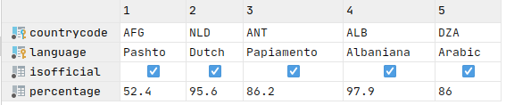

Dataset
Schema:
City table:
Country table:
Countrylanguage table:

In this article we will discover main analytics features of postgresql. If you are familiar with classic sql, you can find some postgres specific features witch will boost your analytic experience.
TopicsCTE (with expression) allow you to write your queries in chain style rather that classic sql statements where your write "deep queries". Step by step you can extend your query using previous results. Lets look in example above:
SELECT countrycode, langcount
FROM (
SELECT countrycode, COUNT(*) as langcount
FROM countrylanguage
GROUP BY countrycode
) country_lang_count
WHERE langcount > 1
ORDER BY langcount DESC;WITH country_lang_count AS (SELECT countrycode, COUNT(*) as langcount
FROM countrylanguage
GROUP BY countrycode)
SELECT countrycode, langcount
FROM country_lang_count
WHERE langcount > 1
ORDER BY langcount DESC;As you can see CTE simplify understanding of your queries. But real power of WITH expression is RECURSIVE ability.
Lets implement query that evaluate sum of first N numbers (sum[1..N]) with RECURSIVE WITH:
WITH RECURSIVE t(n) AS (
VALUES (1)
UNION ALL
SELECT n + 1
FROM t
WHERE n < 100
)
SELECT SUM(n)
FROM t;You can find details in documentation.
If we want to filter data in sql query than we typically user WHERE statement with combination of
conditions like query above, but postgres allows to use filter inside select for groupby.
SELECT countrycode,
avg(population) FILTER ( WHERE population > 10000 ) AS avg_population
FROM city
GROUP BY countrycode;SELECT countrycode,
avg(population) AS avg_population
FROM (
SELECT countrycode, population
FROM city
WHERE population > 10000
) city_population
GROUP BY countrycode;Note that in first query results can contains null in case when countrycode has no cities with
population > 10000.
-- left join
SELECT city.name, c.continent
FROM city
LEFT JOIN country c ON city.countrycode = c.code;
-- cross join
SELECT city.name as from_city, c.continent as to_continent
FROM city
CROSS JOIN country c;
-- cross join with self
SELECT city.name as from_city, c.name as to_city
FROM city
CROSS JOIN city c
WHERE city.id != c.id;This part of postgresql is useful when you have to analyse time series data. So we will extend our schema with population dataset [csv] (extracted from worldbank). New table population contains three columns: code, year, population.
When we want to measure percentile [?] we shall use
ordered sets. In example above we percentile_disc and within group for measure median.
SELECT percentile_disc(0.5) within group ( order by population ) as median_population
FROM population;Rank is probability aggregate that answer to question: what position in rating will be placed if value will be equal this.
For example: if gnp [Gross National Product] will be equal 500 than what position will be in each region.
SELECT
region,
rank(500) WITHIN GROUP ( ORDER BY gnp DESC NULLS LAST)
FROM country
GROUP BY ROLLUP (region);We can use ROWS BETWEEN for prev and next values in aggregate function.
SELECT code,
year,
avg(population.population) over
(PARTITION BY code ORDER BY year ROWS BETWEEN 0 PRECEDING AND 3 FOLLOWING)
FROM population
WHERE code = 'ABW';We can use OLAP Cubes with postgres cube extension. The main idea of cubes is cache aggregates. It is look like groupby with multiple arguments. Lets look to example above:
SELECT
continent, region, sum(gnp)
FROM country
GROUP BY continent, CUBE (region)
ORDER BY continent, region;
continent | region | sum
---------------+---------------------------+------------
Africa | Central Africa | 32938.00
Africa | Eastern Africa | 69925.00
Africa | Northern Africa | 243870.00
Africa | Southern Africa | 126931.00
Africa | Western Africa | 106711.00
Africa | | 580375.00
Antarctica | Antarctica | 0.00
Antarctica | | 0.00
Asia | Eastern Asia | 5524885.00
Asia | Middle East | 677260.00
Asia | Southeast Asia | 642643.00
Asia | Southern and Central Asia | 810604.00
Asia | | 7655392.00
Europe | Baltic Countries | 22418.00
Europe | British Islands | 1454251.00
Europe | Eastern Europe | 659980.00
Europe | Nordic Countries | 676655.00
Europe | Southern Europe | 2012289.00
Europe | Western Europe | 4673272.00
Europe | | 9498865.00
North America | Caribbean | 103586.20
North America | Central America | 473151.00
North America | North America | 9111890.00
North America | | 9688627.20
Oceania | Australia and New Zealand | 405851.00
Oceania | Melanesia | 10530.00
Oceania | Micronesia | 1848.70
Oceania | Micronesia/Caribbean | 0.00
Oceania | Polynesia | 1545.00
Oceania | | 419774.70
South America | South America | 1511874.00
South America | | 1511874.00
(32 rows)Result contains two types of group by: (continent, *), (continent, region). So we can see gnp in whole continent and in region.
If we want to save this cube we can use MATERIALIZED VIEW. In opposite to VIEW this
view is not fetched every time, so we need to refresh this manually.
CREATE MATERIALIZED VIEW continent_region_gnp AS
SELECT continent,
region,
sum(gnp)
FROM country
GROUP BY continent, CUBE (region)
ORDER BY continent, region;
-- refresh
REFRESH MATERIALIZED VIEW continent_region_gnp;
-- drop materialized view
DROP MATERIALIZED VIEW continent_region_gnp;Near CUBE you can find ROLLUP lets explain:
ROLLUP(e1, e2, e3, ...)
(e1, e2, e3, ...)
...
(e1, e2),
(e1),
(e1)CUBE(e1, e2, e3)
(e1, e2, e3)
(e1, e2, *)
(e1, , e3)
(e1, *, *)
(*, e2, e3)
(*, e2, e3)
(*, e2, *)
(*, *, e3)
(*, *, e3)

Author @mrkandreev
Machine Learning Engineer